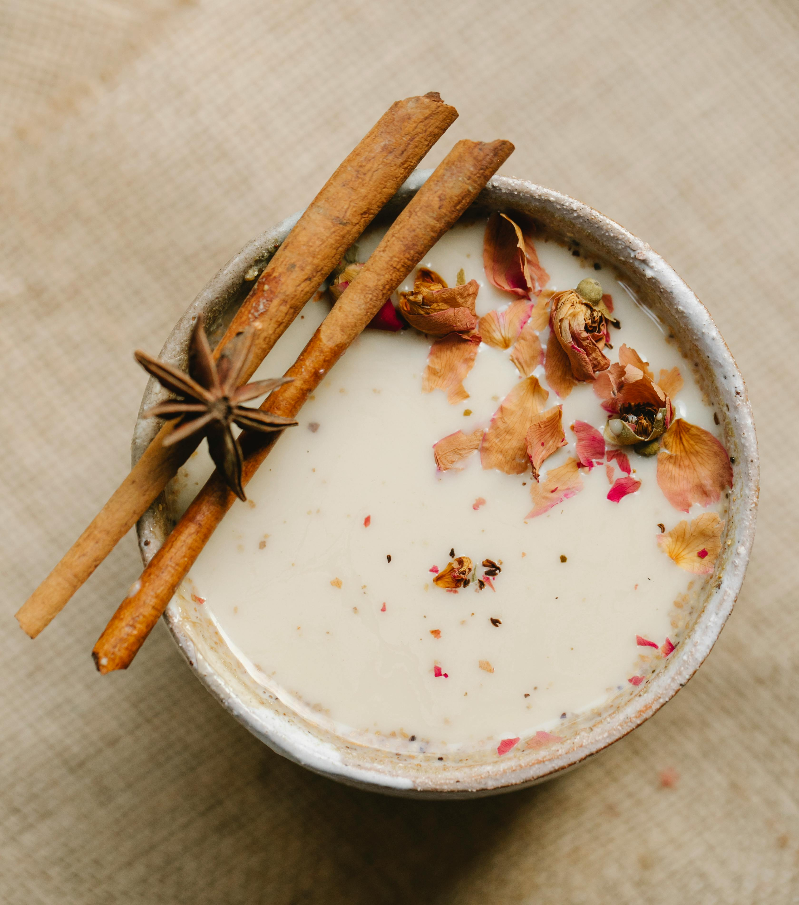

Masala Chaas

Description
Made using yoghurt, curry leaves and water, Masala Chaas is a traditional Indian drink and is full of flavours. Using curd as a base, this is a prefect drink for summers to quench the thirst. It provides a cooling effect and helps in beating the scorching summer heat. It also goes best with stuffed parathas and can be enjoyed any time of the day. If you add a tadka made of mustard seeds, cumin seeds and chillies, then its taste becomes super-amazing. You can have it either with your meal or after it. If you are habitual of drinking extra sugary drinks, then this desi drink can easily replace them as a healthy alternative.
Ingredients
- 1/2 teaspoon mustard seeds
- 1 cup chilled water
- 1 pinch asafetida
- 2 green chilli
- 1/2 teaspoon butter
- 1/2 teaspoon cumin seeds
- 1 cup yoghurt (curd)
- 6 curry leaves
- 1 teaspoon red chilli powder
Steps
- Put tadka to the buttermilk :
Either you can make the buttermilk at home by churning the dahi or get one buttermilk pouch from the market. Heat butter in a pan, add the tadka of mustard seeds, cumin seeds, asafoetida, curry leaves, green chillies to it. Let the tadka crackle for a minute and then add it to the buttermilk.
- Mix salt and serve chilled :
Add salt to taste, red chilli powder, mix well and serve it chilled.
Source